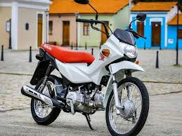

1– Honda CG 160
Em produção há mais de 45 anos, a Honda CG continua sendo a moto mais vendida do Brasil. Vendida em quatro versões, da básica Start à mais equipada Titan, a CG 160 é sinônimo de robustez e economia de combustível. Seja para se locomover ou para trabalhar, a CG é a queridinha dos motociclistas brasileiros.
418.868
2- Honda Biz
Mesmo após 25 anos de história, a Honda Biz continua sendo um sucesso de vendas. A motoneta foi a segunda motocicleta mais vendida no ano passado, em suas duas versões, de 110 cc e 125 cc.
216.933
3- Honda NXR 160 Bros
Moto trail mais vendida do Brasil, a Bros 160 é uma espécie de “CG rural”. Afinal, usa o mesmo motor da CG 160, porém com rodas maiores, suspensões de curso mais longo e pneus de uso misto. Mesmo sem mudanças desde 2021, a Bros mantém-se firme e forte na lista das mais vendidas.
149.730
4- Honda Pop 110i
